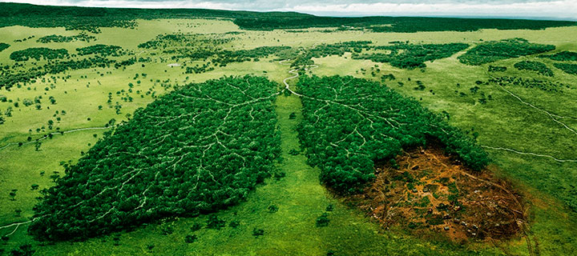
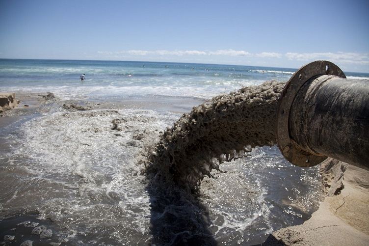
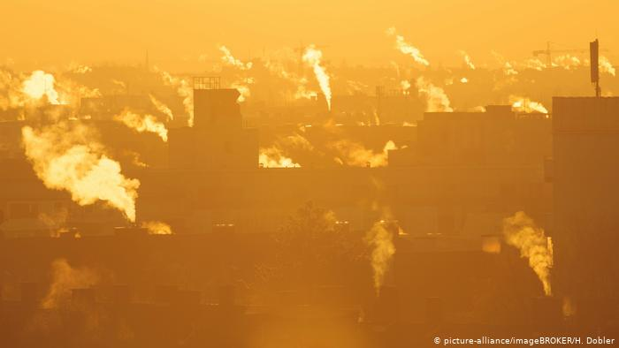

Екологія в інших країнах
Порятунок лісів від знищення є найважливішим завданням для кожного з нас. Адже лісові ресурси дуже потрібні людині. Будівництво будинків, залізниць і судів, виготовлення різних виробів не обходиться без деревини. Потреби використання дерева надзвичайно високі, тому виникла проблема вирубки лісу. Ми просто не могли обійти цю тему, як компанія, яка займається будівництвом дерев'яних конструкцій, і вирішили вивчити, як в різних країнах рятують ліс.
На нашій планеті ліс є зосередженням життя і місцем існування величезної кількості живих організмів, завдяки чому Землю ще називають зеленою планетою. Але сьогодні залишилося всього лише близько половини всіх лісів, що покривали планету спочатку. Поняття завоювання кілька століть було визначальним у відносинах людини з лісом. Люди просто вирубували ліс, який перешкоджав розвитку їхньої діяльності, або використовували в якості товару для отримання прибутку. Таке споживче та безвідповідальне ставлення до природи, звичайно, не залишилося безкарним. Після вирубки лісу грунт з'їдала ерозія, річки покривалися мулом, зменшувалася родючість землі, приходило в занепад землеробство і, як наслідок, вся цивілізація. Тут можна привести гіркий приклад виродження древніх культур Месопотамії, Середземномор'я, Центральної Америки. Що найсумніше, так це те, що за останні десятки років процес знищення лісів тільки продовжує набирати обертів. Тобто всі знають про проблему, але не надають їй значення, живучи тут і зараз, абсолютно не замислюючись про подальші поколіннях і про те, в якому світі вони мають жити… Тим не менше, багато прогресивних вчених, громадських діячів, екологів в різних куточках планети на ділі розробляють і вживають заходів з порятунку і збереженню лісів. Ми вирішили дізнатися і поділитися з вами, як відбувається порятунок і відновлення лісу в різних країнах.
Забруднення води
У країнах на зразок Швейцарії, Норвегії і Люксембурга можна пити воду з-під крану і не переживати з приводу її якості. У Україні цей трюк як мінімум небезпечний і навіть пахне екстримом. Вся річ у тому, що згідно з даними ООН наша країна знаходиться на 95 місці рейтингу по чистоті питної води. Центральне водопостачання охоплює близько 70% українців. Потреби 20% з них забезпечуються за рахунок підземних прісних вод, інші 80% п'ють з поверхневих водойм на зразок річок Дніпро і Десна. Повірте, їх складно назвати чистими. Вдумайтеся, 40% промислових і господарчо-побутових відходів, які підприємства зливають в річки, не очищаються або не відповідають встановленим санітарним вимогам! Органічні речовини, яйця гельмінтів, патогенні бактерії, сульфати, хлориди, залізо - лише мала дещиця "бонусів", які ми отримуємо разом з водою. Відразу хочеться відійти чимдалі від кранів і вийти з душу. Сьогодні поговоримо про причини і наслідки ситуації, що склалася. Постараємося не перетворювати статтю на страшилку, хоч самим вже трохи жахливо.
Забруднення повітря
Щороку в світі від забруднення повітря передчасно помирають мільйони людей. Ще кілька мільярдів щодня змушені дихати насиченим пилом та отруйними сполуками повітрям. Нині загалом близько 90 відсотків дітей проживають у містах, де повітря забруднене різними шкідливими речовинами. Такі дані наводить Всесвітня організація охорони здоров'я (ВООЗ). Експерти ВООЗ зазначають, що особливо серйозні проблеми внаслідок забруднення повітря спостерігаються в переважній більшості міст небагатих країн. Крім пилового забруднення, не меншу загрозу становлять й інші отруйні речовини, котрі потрапляють у атмосферу внаслідок роботи транспортних засобів, експлуатації промислових та сільськогосподарських об'єктів, а також під час спалення вугілля та дров. Йдеться насамперед про оксиди азоту, озон та аміак, зазначають експерти. Приміром, той самий аміак може вступати в реакції з іншими шкідливими викидами й утворювати ще небезпечніші для здоров'я людини сполуки.